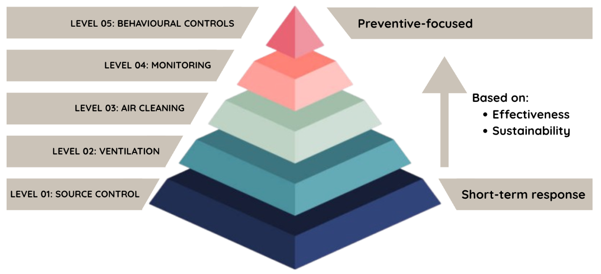

CDE4301 Innovation & Design Capstone
AY2025/2026 Semester 1
IS-405: Smart Air-purifying Plant Tower (Indoor Air Purification)
Interim Report
Acknowledgements
Thank Project Supervisor, Co-Supervisor, and any other parties who have helped in the project.
- Dr Elliot Law
- Dr Jovan Tan
- Tanvi R. Thombre
- Ms Annie Tan
- Mr Patrick Tan
- Dr Aleksandar Kostadinov
- Dr Veerasekaran S/O P Arumugam
Abstract
Indoor air pollution has become a critical yet often overlooked environmental and public health concern, particularly in high-density urban regions such as Singapore, where individuals spend up to 90% of their time indoors. Among the various pollutants, volatile organic compounds (VOCs) emitted from common household items like paints, adhesives, furnishings, and cleaning agents, pose significant health risks, ranging from respiratory irritation to carcinogenic effects. Conventional air-cleaning systems, including activated carbon filters and photocatalytic purifiers, are limited by energy consumption, maintenance needs, and by-product formation. This project explores a plant–microbe biofiltration approach as a sustainable, low-energy alternative for VOC removal. Leveraging the synergistic relationship between plants and rhizospheric microorganisms, the system enables continuous biodegradation of VOCs into harmless compounds without secondary waste generation. Through phased research involving plant selection, pilot testing, and proof-of-concept validation, this study investigates the effectiveness of different plant–microbe pairings in reducing concentrations of five key VOCs—formaldehyde, benzene, toluene, ethylbenzene, and xylene (FBTEX). The findings aim to inform the development of a scalable, self-sustaining indoor air purification system that enhances air quality, supports occupant well-being, and aligns with Singapore’s broader sustainability and low-carbon urban design goals.
1. Introduction (Sammi)
1.1. Importance of Indoor Air Quality
Air quality is fundamental to human health and well-being, influencing respiratory, cardiovascular, and cognitive functions (World Health Organization, 2025). While outdoor air pollution has received greater attention due to its visible impacts, it represents only part of overall exposure. Indoor air quality (IAQ), by contrast, remains an under-recognised yet equally critical aspect of environmental health, as indoor pollutants are often invisible, odourless, and difficult to detect without monitoring (Dcarrick, 2024; US EPA, 2025).
In Singapore, IAQ is particularly important due to the country’s tropical climate, dense urban environment, and reliance on air-conditioning. Singaporeans spend up to 90% of their time indoors, inhaling approximately 11,000 litres of air daily, often in enclosed spaces such as homes, offices, and shopping malls where pollutant accumulation is common (BCA, 2020; Lung Basic, n.d.; Pedro et al., 2024c). Notably, Singapore ranks among the top countries where indoor air can be worse than outdoor air, highlighting the significance of indoor exposure (Air Quality Connected Data Study, 2024).
Indoor air pollution can be broadly categorized into two main groups: Particulate Matter (PM) and Gaseous Contaminants, as illustrated in Table 1.
| Particulate Matter (PM) | Gaseous Contaminants | ||
|---|---|---|---|
| Description | Complex mixture of microscopic solid particles and liquid droplets suspended in air | Inorganic Gases (Nitrogen oxides, carbon oxides) | Organic Gases (Volatile Organic Compounds, VOCs) |
| Sources |
- Outdoor air - Indoor sources (pollen, mold spores, dust mites) - Human activities (cooking, candle burning) |
Combustion from gas-fueled cooking and heating appliances |
- Printers - Household products (paints, pesticides, dyes, cleaning agents) |
| Health Impacts | Respiratory symptoms, nonfatal heart attacks, aggravated asthma | Respiratory symptoms, fatigue, chest pain |
Short Term: Eye, nose and throat irritation, headaches, loss of coordination and
nausea Long Term: Organ damage, increased risk of cancer |
Among these pollutant categories, VOCs are of particular concern due to their persistence, indoor dominance, and long-term health risks, which will be discussed in the next section.
1.2. Volatile Organic Compounds (VOC) in Indoor Air and Their Impacts
Among indoor air pollutants, organic gases such as VOCs show the highest indoor-to-outdoor ratios, indicating their strong indoor dominance (Air Quality Expert Group, 2022). Indoor VOC concentrations are commonly 2–5 times higher than outdoors and can rise further in sealed, air-conditioned spaces with limited ventilation (US EPA, 2025). Unlike particulate matter or inorganic gases that dissipate more quickly, VOCs can persist for months because they are continuously emitted from paints, furniture, adhesives, cleaning agents, and building materials, reaching levels up to 19 µg/m³ in Singapore buildings (Zuraimi, Tham, & Sekhar, 2004).
Although hundreds of VOC species can be present indoors, five compounds, formaldehyde, benzene, toluene, ethylbenzene and xylene (FBTEX), are among the most consistently detected and are widely recognised as key health-relevant VOCs.
Formaldehyde, commonly emitted from building materials, pressed-wood furniture, coatings and adhesives, is a well‐documented irritant to the eyes, nose and throat and has been classified as a probable human carcinogen even at relatively low concentrations (Kaden, Mandin, Nielsen, & Wolkoff, 2010). In large-scale studies across Europe, Asia and North America, indoor formaldehyde concentrations in homes have commonly ranged from about 10 to 40 μg/m³, with upper 95th percentile values above 50 μg/m³ in some case-studies (Canada, 2021).
Meanwhile, the BTEX group are aromatic hydrocarbons produced by solvent use, paints and adhesives, indoor combustion sources and infiltration from vehicle exhaust or attached garages (Vardoulakis et al., 2020). Indoor benzene levels typically span 2 to 12 μg/m³ in non-smoking homes in Europe, with occasional higher peaks associated with smoking or fuel exhaust infiltration (Harrison, Saborit, Dor, & Henderson, 2010).
They are frequently used as indicator compounds for indoor VOC pollution and have been shown to pose both non-carcinogenic (neurological, respiratory) and carcinogenic (e.g., benzene to leukemia) risks in indoor settings. Their high vapour pressure means they readily partition into air, especially in poorly ventilated indoor spaces, leading to concentrations that may significantly exceed outdoor levels (Baberi et al., 2022).
Therefore, this project focuses on Formaldehyde and the BTEX compounds, as they are among the most common and harmful VOCs emitted by everyday household materials. Concentrating on these five pollutants enables us to address the primary drivers of indoor VOC build-up and develop more effective strategies for monitoring, reduction, and prevention.
1.3. Current Solutions to tackle VOC and Their Limitations
Existing strategies to manage indoor VOC levels typically follow a hierarchical approach, including source control, ventilation, air cleaning, monitoring, and behavioural controls, as illustrated in Figure 4. They are ranked based on their effectiveness and sustainability, which follows Singapore Standard SS554:2016 Code of Practice for indoor air quality, prioritising elimination before ventilation, treatment, behavior and control (NEA, n.d.).

Figure 4: Hierarchy pyramid of current strategies tackling VOC - Click the + buttons to learn more
Level 01: Source Control
- Most effective strategy (prevention-based approach)
- Eliminating or reducing the sources of pollutants (e.g low-VOC materials, reused chemical usage)
Limitations:
- Effectiveness depends on accurate identification of emission sources
- Limited availability of fully non-toxic alternatives
- Continuous emissions from indoor materials make complete elimination difficult (US EPA, 2025)
- Tropical conditions (high temperature and humidity) increase off-gassing and prolong VOC re-emission (Yin, Gao, Wei, Wu, & Wang, 2024)
Level 02: Ventilation
- Increases dilution of indoor VOCs/ air exchange through introduction of outdoor air (e.g opening windows, mechanical ventilation systems with high-efficiency air filters)
Limitations:
- Effectiveness limited in urban environment with poor outdoor air quality
- Higher ventilation rates increase energy demand (cooling + dehumidification)
- Higher operational costs and reduced sustainability
Level 03: Air Cleaning
- Use mechanical/ chemical technologies to actively remove pollutants (e.g HEPA filters, activated carbon filters, oxidation technologies (PCO, UV))
Limitations:
- HEPA filters effective in capturing particulate matter, but ineffective for VOCs
- Activated carbon adsorbs VOC, but do not destroy them
- Risk of VOC re-release once filters saturated and generate secondary waste
- Oxidation technologies often exhibit incomplete oxidation, producing harmful by-products
- High energy consumption and catalyst degradation over time, releasing harmful TiO2 nanoparticles
- Overall performance often inconsistent under real indoor conditions
Level 04: Monitoring
- Track VOCs level (e.g TVOC, formaldehyde, CO2) in real time
- Enables early detection of pollutant spikes
- Supports timely intervention and improved ventilation controls (Marcham, Miller, Springston, Hawkins, & Kollmeyer, 2020)
- Recommended in Singapore’s SS 554:2016 Code of Practice for Indoor Air Quality
- Increase availability of low-cost IAQ sensors
Limitations:
- Does not directly remove pollutants (passive)
- Functions mainly as a supporting tool for IAQ management
Level 05: Behavioural Controls
- Reduces VOC exposure through occupant actions and habits (e.g. use of low-VOC products and limiting chemical usage)
- Encourage ventilation during pollutant-generating activities and avoid indoor combustion
- Can reduce VOC levels by ~20-60% depending on compliance (Modupe Mewomo et al., 2021)
- Supported by awareness campaigns and environmental labelling
Limitations:
- Highly dependent on user behaviour and consistency
- Not reliable as a standalone long-term solution
While these strategies can reduce pollutant exposure, their effectiveness in managing VOCs remains limited due to the continuous and persistent nature of indoor emissions.
Monitoring systems provide real-time data on pollutant concentrations but do not actively remove contaminants. Similarly, behavioural controls, such as reducing the use of VOC-emitting products, are highly dependent on consistent user compliance, which is difficult to maintain across varied indoor environments. As a result, these approaches serve primarily as supplementary measures rather than standalone solutions.
Source control and ventilation are widely regarded as primary preventive strategies for IAQ improvement. By reducing pollutant emissions and diluting indoor air, these methods can lower VOC concentrations by approximately 55%. However, VOCs are not fully eliminated due to their continuous emission from indoor materials such as furniture, paints, and adhesives (Joo et al., 2025). A meta-analysis of 77 residential IAQ studies further found that multiple VOCs continued to exceed chronic health benchmarks even under typical ventilation conditions, indicating that source control and ventilation alone are insufficient (Logue et al., 2011; Mata et al., 2022).
To address the limitations of preventive IAQ strategies, air-cleaning technologies have been widely adopted to actively remove indoor pollutants. These approaches rely on mechanical or chemical processes, however, each presents notable limitations for VOC removal, as summarised in Table 2.
| Technology | Strength | Limitation |
|---|---|---|
|
HEPA Filters (US EPA, 2022) |
Capture up to 99.97% of particles ≥0.3 μm | Ineffective for VOC removal due to its gaseous nature |
|
Activated Carbon (ScienceDirect, 2023) |
Rely on adsorption of VOC | Re-release pollutants upon reaching saturation, requiring frequent replacement which generates secondary waste |
|
Photocatalytic/ UV Oxidation (Zhong et al., 2013; Sivasankar et al., 2018) |
Degrade VOC |
- Formation of harmful by-products due to potential incomplete oxidation under indoor
conditions - Requires continuous energy input - Catalyst degradation over time, releasing nanoparticles (TiO2) |
|
Plasma (Messan, 2022) |
Degrade VOC | Often modest or inconsistent under indoor conditions |
Hence, the limitations associated with existing IAQ strategies, including source control, ventilation, air cleaning, monitoring, and behavioural controls—such as high energy demands, ongoing maintenance requirements, variable performance, and the potential generation of secondary by-products, render them insufficient in addressing the persistent and continuous nature of indoor VOC emissions.
In response to this, nature-based solutions such as plant–microbe systems have gained increasing attention for their ability to provide continuous, energy-efficient VOC removal in indoor settings. Plant-based air purification systems have been shown to remove a wide range of VOCs through biological processes, where pollutants are absorbed and metabolised into less harmful compounds. This approach reduces reliance on adsorption or chemical oxidation methods that may generate secondary pollutants. Studies have demonstrated their ability to target compounds such as BTEX, alcohols, and aldehydes (Sheoran et al., 2022). In addition, these systems typically operate with low energy input, require minimal maintenance, and can adapt to varying pollutant levels, making them suitable for long-term and sustainable indoor application.
1.4. Plant-Microbe System
1.5. Current Plant-Microbe Methods in Market
Plants are increasingly recognized as a sustainable and effective means of mitigating VOCs in indoor and urban environments through a process known as phytoremediation, as shown in Figure 2. This process harnesses the ability of plants and their associated root microorganisms to capture, transform, and degrade gaseous pollutants into less harmful substances. VOC uptake occurs primarily through leaf stomata and cuticular adsorption, where compounds such as formaldehyde, benzene, and toluene are absorbed and subsequently metabolized within plant tissues through oxidation, conjugation, and sequestration processes (Wolverton & Nelson, 2020). Some VOCs are translocated via the transpiration stream to roots, where rhizospheric microorganisms further degrade them enzymatically into benign end-products such as CO₂, water, and organic acids (Green Plants for Green Buildings, 2014).
From Figure 3, research has shown that plants hosting active microbial communities remove significantly higher VOC concentrations compared to sterilized systems, demonstrating that plants and microbes act collaboratively to purify air (Ravindra & Mor, 2022).
Microbes play a crucial role in enhancing the ability of plants to purify air because they act as the biochemical engines behind pollutant breakdown. While plants absorb VOCs through their leaves and roots, most of actual degradation happens through the microorganisms living around the rhizosphere and on leaf surfaces. These microbes, which are mainly bacteria and fungi, use VOCs as a carbon and energy source, metabolizing them via enzymatic reactions such as monooxygenation and dioxygenation, which transform harmful compounds like BTEX into CO₂, water and organic acids (Ravindra & Mor, 2022).
The rhizosphere, a root-influenced zone rich in microbial activity, plays a central role in enhancing VOC degradation. Plant roots release sugars and amino acids that fuel microbial communities, while these microbes break down VOCs that diffuse into the soil, preventing their re-emission into indoor air. Exposure to VOCs can also enrich VOC-degrading species such as Pseudomonas and Rhodanobacter, strengthening the system’s overall biodegradation capacity (Cruz et al., 2023). Studies show that this plant–microbe synergy can remove over 60% of formaldehyde, benzene, and xylene in controlled indoor environments when paired with optimized airflow and plant density (Irga, Pettit, & Torpy, 2018).
Beyond pollutant removal, phytoremediation contributes additional co-benefits such as humidity regulation, oxygen generation, and psychological well-being, making it a multifunctional and eco-friendly approach for improving indoor air quality.
1.5. Current Plant-Microbe Methods in Market
Currently, three main plant–microbe methods are being researched or implemented for indoor air pollutant removal: Engineered Microbial Inoculation, Photocatalytic Biofiltration, and Smart Green Wall systems.
-
Engineered Microbial Inoculation
Recent biotechnology start-ups such as Neoplants have introduced systems that integrate engineered plant–microbe pairs to enhance indoor VOC degradation. These genetically modified microbes are designed to express specific enzymes capable of breaking down certain types of common pollutants more efficiently than natural microbial communities. When paired with plants, these microbes accelerate root-zone microbial biodegradation. It is shown that this use of this system has 30 % lower VOC (BTX) concentrations than control after 13 days of continuous emission (NEOPLANTS, n.d).
However, the main limitation is biosafety and containment. Current product information offers little details on how engineered microbes are confined indoors or prevented from entering natural ecosystems. Risks include horizontal gene transfer, uncontrolled proliferation, and disruption of existing microbial communities, potentially altering nutrient cycles or giving environmental microbes unnatural metabolic traits (OECD, n.d.). Without transparent biosafety data or regulatory oversight, the long-term ecological impacts remain uncertain, making large-scale adoption in public or commercial buildings difficult.
-
Photocatalytic Biofiltration
Another emerging solution as seen in Figure 4 combines natural biofiltration with photocatalytic oxidation (PCO) to enhance VOC removal.This hybrid design uses a TiO₂ or WO₃ catalyst activated by visible or UV light to generate reactive oxygen species that break down VOCs, supported by a small fan that circulates treated air outward. Integrating plant biofiltration with photocatalysis accelerates pollutant degradation and reduces reliance on mechanical filters. Studies report that this system removes over 75% of VOCs such as methyl ethyl ketone (MEK) within 24 hours, compared to only 11% removal by a standard potted plant and achieves 85% formaldehyde removal within one hour (NATEDE, 2024).
However, PCO systems still face significant limitations. Incomplete oxidation can generate harmful by-products such as formaldehyde and acetaldehyde, with studies showing by-product yields of about 15% under typical indoor conditions (Mo et al., 2019; Yu et al., 2021). In addition, prolonged use leads to catalyst degradation and possible nanoparticle release from TiO₂ or WO₃ coatings, reducing efficiency and posing inhalation risks (Koivisto et al., 2018). These issues indicate that despite their promise, the long-term safety and durability of photocatalytic biofilters in real indoor environments remain uncertain.
-
Smart Green Wall
Commercial systems such as the NAAVA Smart Green Wall, as shown in Figure 5, utilize natural plant–microbe biofiltration in an active airflow setup. Air is drawn through a soilless growth medium containing plant roots and associated microorganisms, where VOCs such as MEK and toluene are absorbed and enzymatically degraded. Studies have shown that these systems can achieve VOC removal efficiencies of 50–70% in single-pass tests (Naava, n.d.).
However, their primary drawback is spatial and architectural constraint. Each wall unit requires substantial vertical space, a dedicated water and airflow system, and periodic maintenance, which can limit deployment in compact offices, classrooms, or high-density residential units. The size of one NAAVA wall is approximately 1003(W) x 2113(H) x 350(D) mm, which takes up about the same footprint as a built-in wardrobe in residences (Naava, n.d.). Its large space use makes it challenging to integrate in smaller interiors, such as residences and small office areas where floor or wall space is limited. Consequently, despite their proven purification potential, scalability and adaptability to diverse indoor layouts remain restricted.
While existing plant–microbe biofiltration systems demonstrate promising VOC-removal capabilities, each of them faces critical implementation barriers as shown in Figure 6, which highlight the need for a more practical and accessible biological air purification system suitable for household and office environments, with the safety, compactness, and adaptability required for modern urban interiors.
2. Project Overview (Sammi)
2.1. Research Question
Plant–microbe systems represent an advanced extension of phytoremediation, harnessing the synergistic
relationship
between plants and their root-associated microorganisms to enhance VOC degradation efficiency
(Pliushch & Pliushch,
2023). Despite this potential, existing implementations remain constrained by limitations in safety,
scalability, and
practicality, underscoring the need for systems that are durable, low-maintenance, and easily
adoptable in real-world
settings (Aydogan, 2020).
Building upon these insights, this project seeks to explore the potential of developing a safe, practical and accessible biological air purification system suitable for household environments. Specifically, the study aims to address the research question:
“Which commercially available indoor plant and microbe pairing demonstrates the greatest VOC reduction efficiency among the five most common indoor VOCs (Formaldehyde, Benzene, Toluene, Ethylbenzene, and Xylene)?”
By investigating this question, the project aims to identify an optimal plant–microbe combination that offers a sustainable, low-cost, and effective solution for improving indoor air quality in everyday living spaces.2.2. Project Phases
To systematically address the research question, this study adopts a phased approach that integrates both secondary research and experimental validation.
The project is structured into four sequential phases across two semesters, designed to systematically identify the most effective plant–microbe combination for VOC removal. Each phase builds upon the previous one, ensuring a logical progression from preliminary validation to final optimisation, as illustrated in Figure 10.
3. Phase 1: Pre-Experiment - Pilot Study and Proof of Concept (Pearlyn)
Prior to the main experimental phase, a series of pre-experimental investigations were conducted to establish a robust and reliable framework for evaluating the effectiveness of plant–microbe systems in VOC removal. This phase comprised two key components: a pilot study and proof-of-concept experiments.
The pilot study was first undertaken to systematically refine and validate the experimental design. Emphasis was placed on identifying critical parameters, standardising controllable variables, and determining appropriate operating conditions and methodology to ensure data accuracy, consistency, and reproducibility. Building on the conditions established from the pilot study, subsequent proof-of-concept experiments were conducted to validate the effect of the synergistic effect on VOC removal and to assess performance variability across different plant–microbe pairings.
3.1. Pilot Study (Pearlyn)
A pilot study was subsequently conducted within a test chamber over 24-hour cycles to evaluate and refine the experimental setup. The objectives of this study are:- To evaluate the feasibility of the experimental design
- To determine the appropriate amount of pollutants to be used
- To establish the optimal duration for each experimental run
- To identify any potential issues or gaps in the setup that may affect the accuracy or
reliability of subsequent experiments
- To determine the appropriate procedure to setting up experiments
4.1. Preparation of Experimental Set Up
Before initiating the pilot study experiments, it was essential to prepare each component of the experimental setup with clarity and intention. Each aspect of the system—such as the chamber, plant containers, sensors, and pollutant sources—was designed around specific guiding questions to ensure consistency, reliability, and reproducibility. Click on the corresponding buttons to explore the key design questions that guided the setup decisions for each component.

Figure 11: Overview of Experimental Setup Components and Design Considerations - Click the + buttons to learn more
Plant Container
- How can airflow be directed to maximize VOC exposure to the plant roots and rhizosphere?
- How much water/microbe solution should be added to ensure proper hydration and microbial activity?
- How should the LECA be prepared?
- What proportion of the container volume should be filled with LECA to maintain uniformity?
Pollutant Source
- What type(s) of pollutant should be used?
- How much pollutant should be used?
- What characteristics of the pollutant influence experimental design?
Sensor
- What type of sensor should be used to measure VOCs reliably?
- What steps are needed to stabilize the sensor before each experimental run?
Chamber
- What size should the chamber be?
- How should the chamber be modified to allow power connections without compromising enclosure?